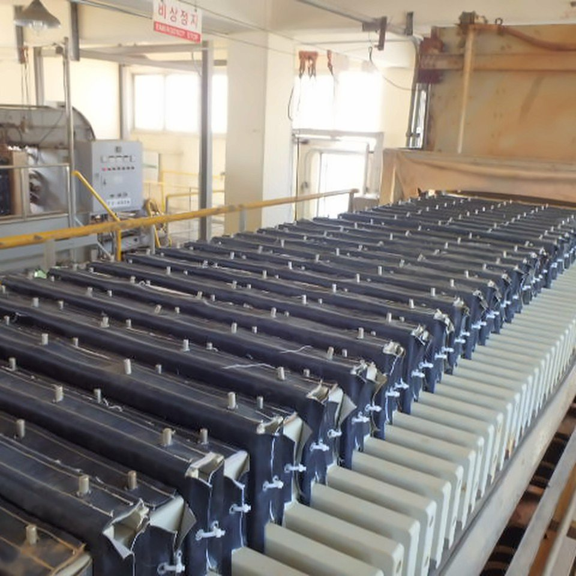
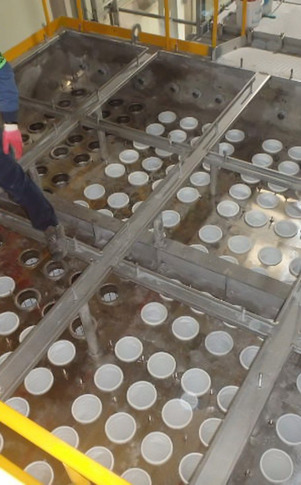

사업분야 · EQUIPMENT CLEANING
설비 클리닝
탱크·Pond 내부 클리닝, 공장 배수로, R.T.O 유지보수·클리닝, Filter Press 세정과 Bag Filter 교체까지 수행합니다. 필요한 현장에는 로봇을 먼저 투입해 작업자가 위험 물질에 노출되는 시간을 줄입니다.
흡입 로봇 · 제어 차량 투입이 업무로 문의하기

- 작업 범위
- 탱크 · Pond · 공장 내부 배수로 · R.T.O · Filter Press 세정 · Bag Filter 교체
- 주요 장비
- 진공흡입차 · 흡입 로봇 · 제어 차량
- 작업 시기
- 저장탱크 개방검사 기간
어떻게 하나요
Tank / Pond Cleaning 용도별 적용 예시
좋아지는 점
- 인명사고 위험 감소 — 질식, 매몰, 협착, 넘어짐 등
- 연속 작업으로 능률 향상(130%) — 조작자 교대, 장비 연속 가동
유의할 점
- 작업자 추가 투입 필요 — 유해성 감소 후 Final Cleaning 인력 작업
- 인원 작업 대비 작업성 저하(70%) — 연속 작업으로 상쇄 가능(91%)
적용 범위
- 방폭지역(고위험가스 설비) 작업 가능(유압구동) — 궤도부 고무재질, 파쇄 및 접촉 부분 Non-spark 재질
- 수중 작업 및 Water Jet-Cleaning 등 동시 작업 가능
- CCTV, Jet 등 추가 장비 장착 가능
기술소개서(2025) 9쪽 용도별 적용 예시 — 글 그대로
투입 장비
 로봇흡입 로봇보유 장비표: 무인준설로봇 흡입형무인 솔루션에서 보기
로봇흡입 로봇보유 장비표: 무인준설로봇 흡입형무인 솔루션에서 보기  장비진공흡입차산업설비 현장의 진공흡입차
장비진공흡입차산업설비 현장의 진공흡입차 장비제어 차량차량의 모니터·제어 장치와 조작자
장비제어 차량차량의 모니터·제어 장치와 조작자
현장 사진



일부 사진은 회사소개서(2024) 10~14쪽 주요사업 안내에 실린 사진입니다